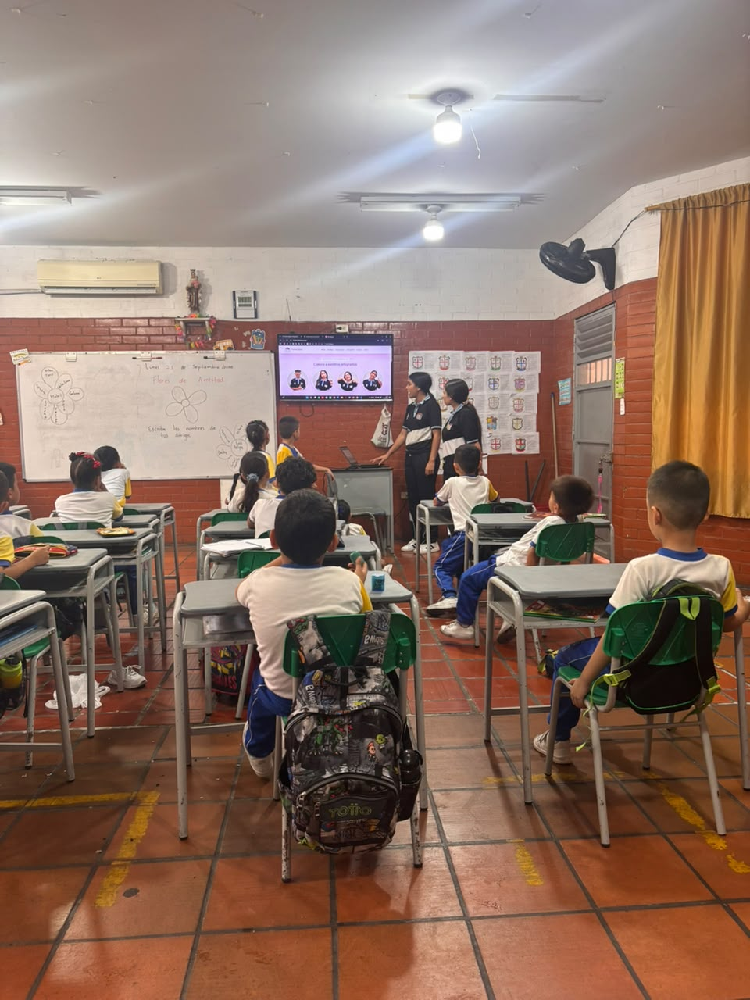
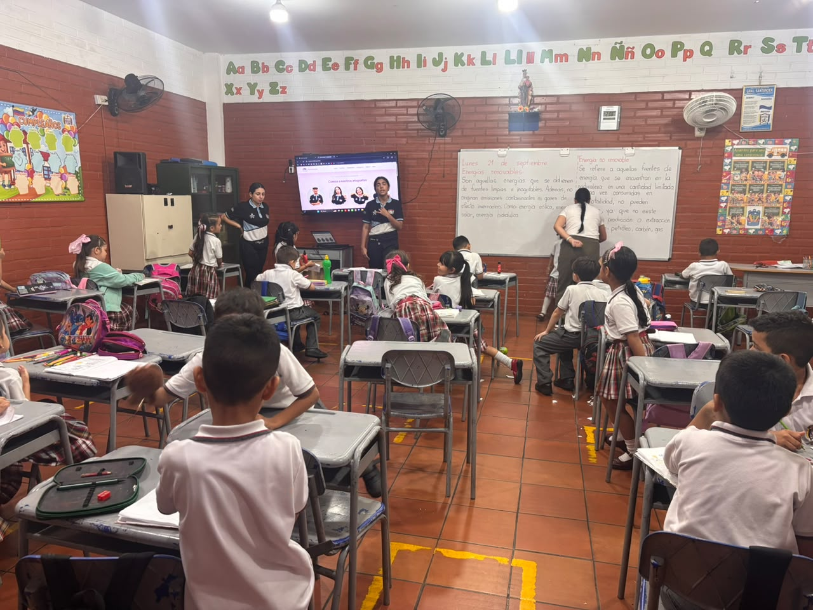
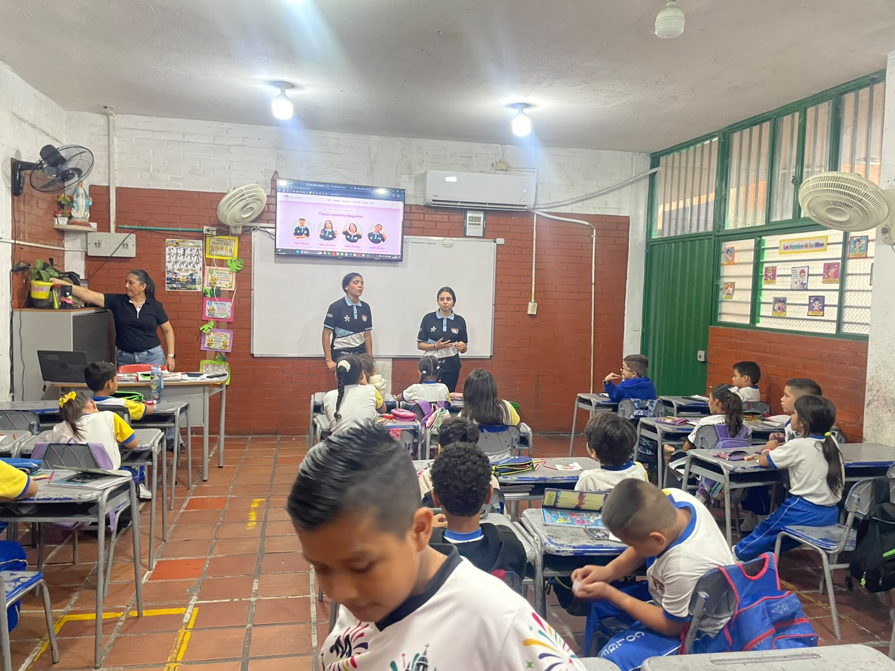
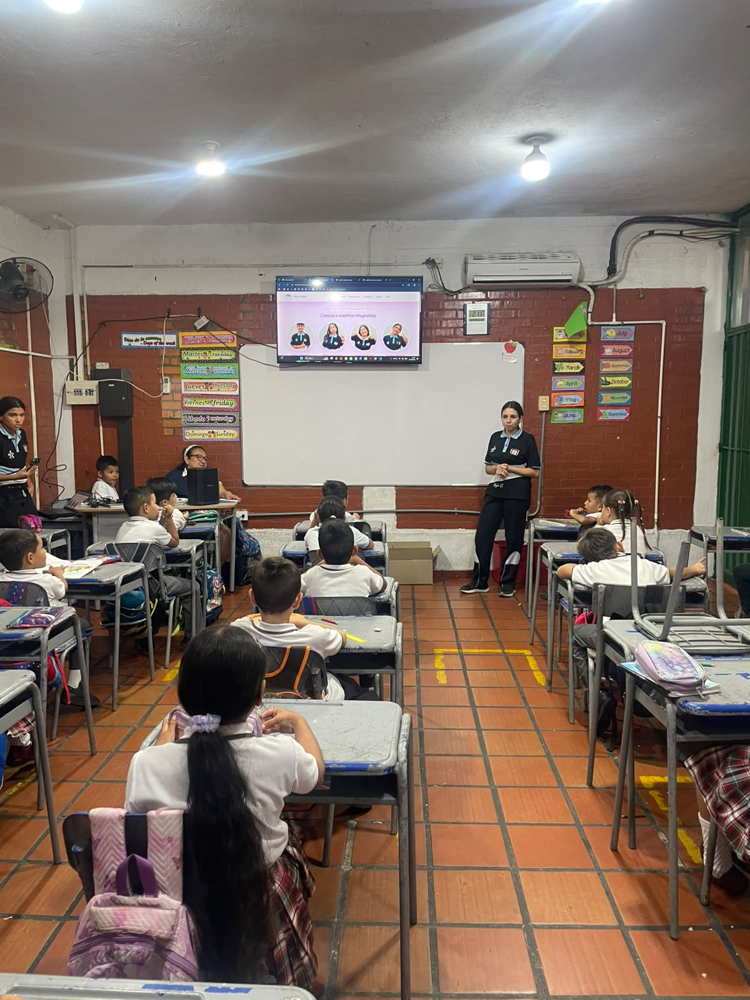
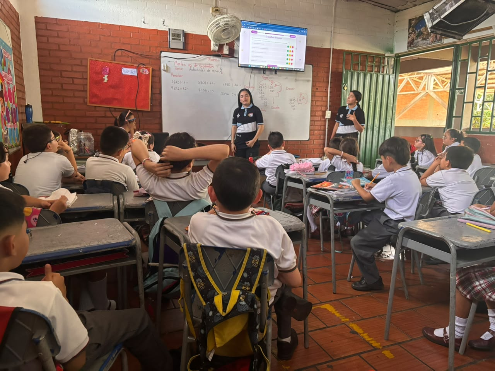
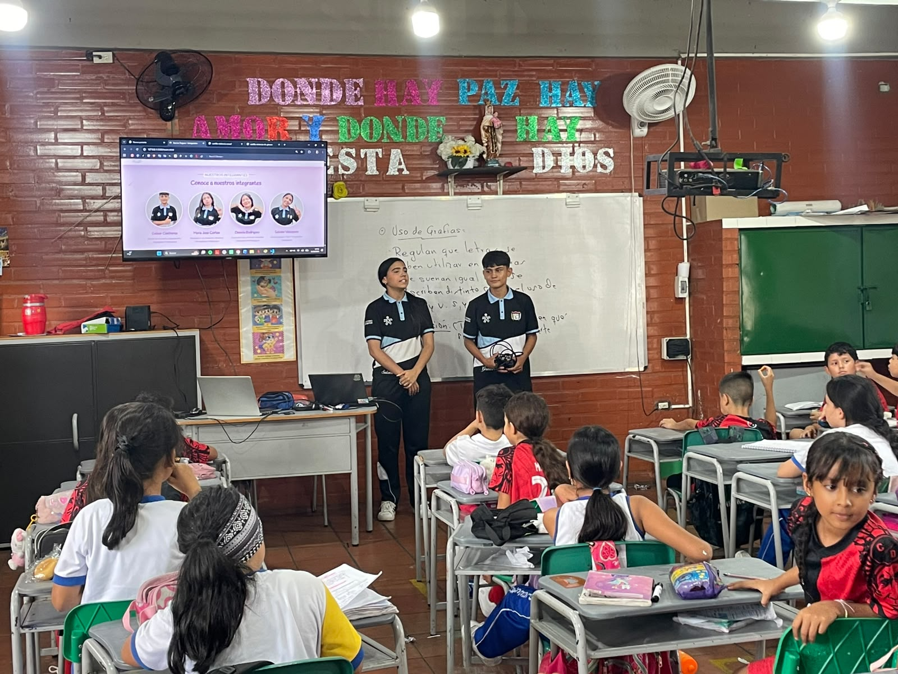
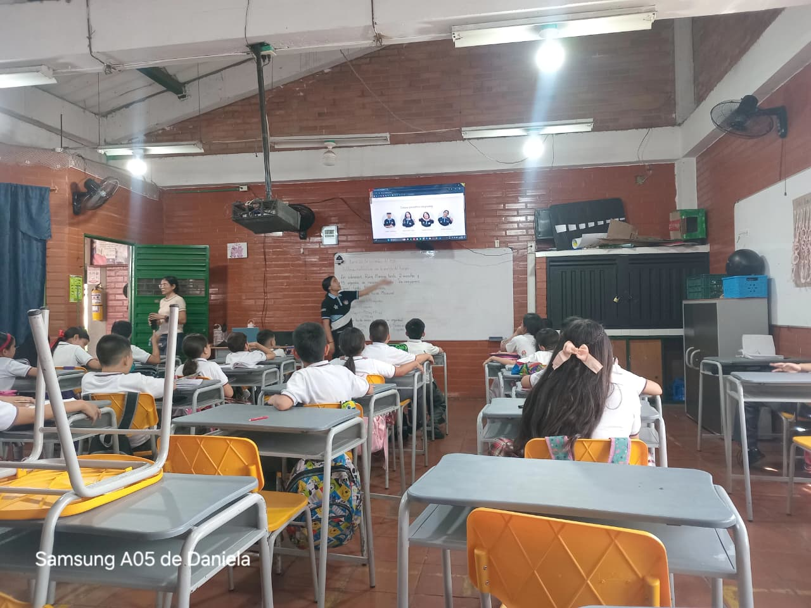
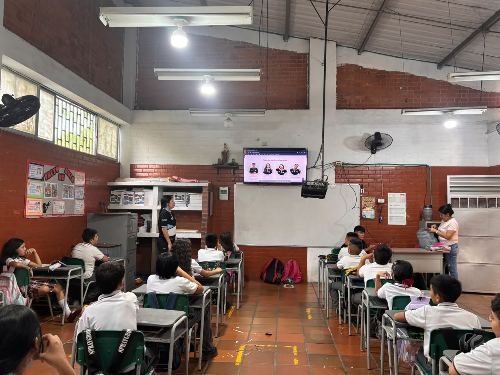
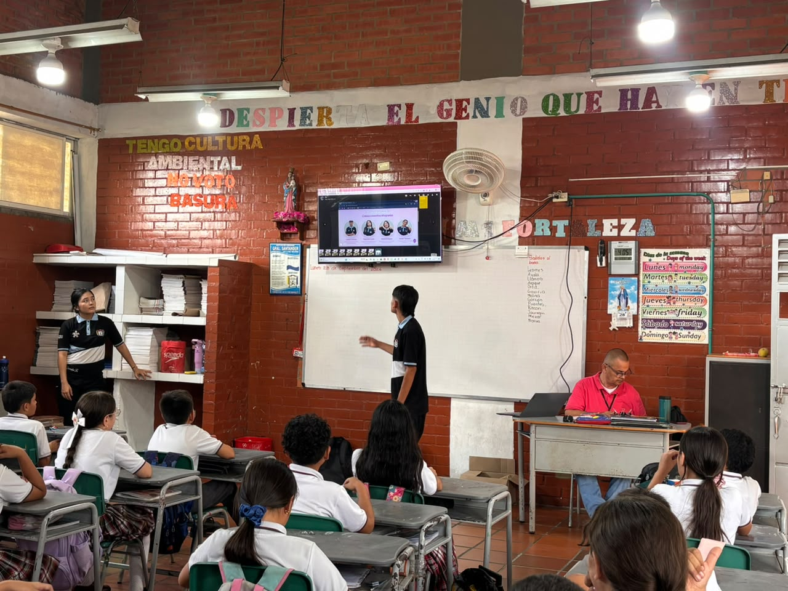

Nuestras mejores actividades
Actividades de 1° a 5°

1-01 F.P.S
En el grado 1-01 se llevó a cabo una dinámica interactiva con un semáforo físico, donde las niñas y niños aprendieron el autocuidado y los límites personales mediante la identificación de las partes del cuerpo con los colores del semáfor

1-02 F.P.S
En el grado 1-02 los estudiantes realizaron una actividad didáctica de colorear, en la cual identificaron las partes del cuerpo y aplicaron la regla del semáforo asignando cada color a las zonas correspondientes.

2-01 F.P.S
En el grado 2-01 realizamos una actividad centrada en la convivencia y el respeto, identificando las acciones correctas e incorrectas en el trato con nuestros compañeros de clase.

2-02 F.P.S
En el grado 2-02 los niños y niñas trabajaron en la identificación de comportamientos positivos hacia los demás, diferenciando las buenas acciones de aquellas que no deben realizarse dentro del grupo.

3-01 F.P.S
En el grado 3-01 aplicamos la actividad del semáforo en un formato físico interactivo, fortaleciendo el reconocimiento de las partes del cuerpo y la asignación de colores según la norma del semáforo

3-02 F.P.S
En el grado 3-02 desarrollamos la guía para colorear e identificar las partes del cuerpo, permitiendo que los estudiantes plasmaran de forma creativa los colores del semáforo en cada zona.

4-01 F.P.S
En el grado 4-01 llevamos a cabo la dinámica del semáforo físico, reforzando los conceptos de cuidado personal y respeto mediante el uso de los colores del semáforo aplicados al cuerpo.

4-02 F.P.S
En el grado 4-02 realizamos un taller de recortar y pegar, donde los alumnos clasificaron diferentes tipos de acciones para identificar cuáles benefician la convivencia con los compañeros y cuáles no.

5-01 F.P.S
En el grado 5-01 trabajamos en un espacio de reflexión grupal orientado a analizar los pensamientos e ideas que tenemos hacia nuestros compañeros, promoviendo el respeto y la empatía.

5-02 F.P.S
En el grado 5-02 participamos en la actividad del semáforo físico, consolidando la reflexión sobre el respeto hacia el cuerpo y los límites personales de manera práctica e interactiva.